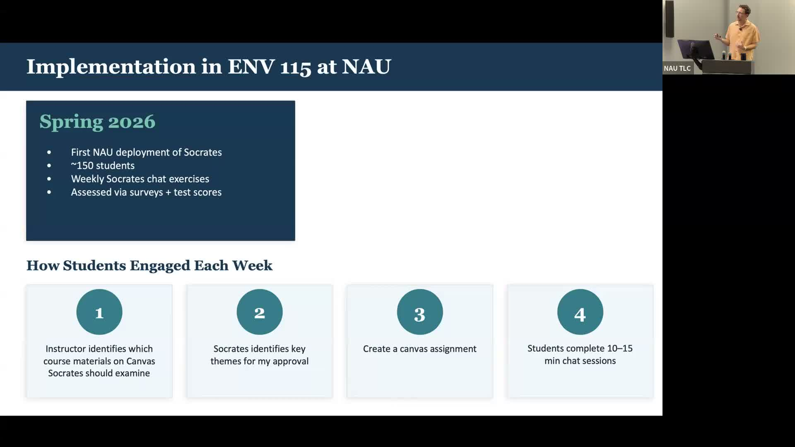
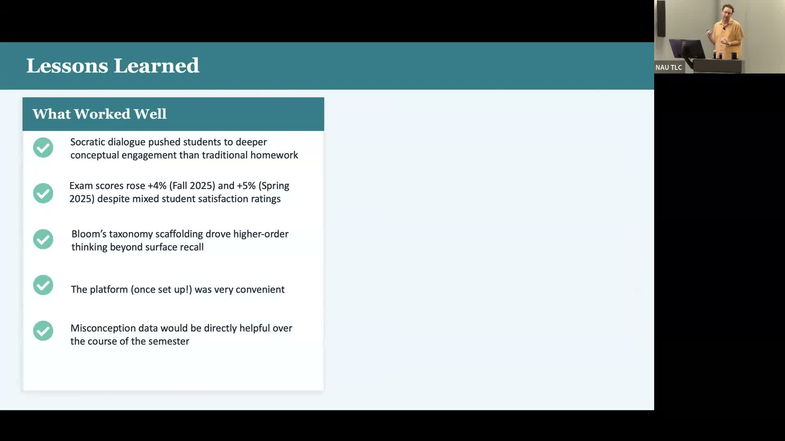

Socrates AI: Scaling Personalized Learning in Large Classrooms
Using an AI chatbot to bring Socratic dialogue and Bloom's Taxonomy scaffolding to a 200-student climate science course at NAU.
Presented by Nick McKay, School of Earth and Sustainability, Northern Arizona University
About This Project
Teaching a large introductory course on climate change presents a fundamental challenge: how do you create the kind of interactive, personalized learning that works in small seminars when there are 150 to 200 students in the room? Nick McKay, a climate scientist and professor in NAU's School of Earth and Sustainability, piloted Socrates — an AI chatbot developed at Cornell University — as a weekly assignment in Environmental Science 115 (ENV 115) during Spring 2026. Socrates mimics the Socratic method, guiding each student through a personalized dialogue that progresses through Bloom's Taxonomy, from basic recall up through analysis, evaluation, and creative synthesis, without requiring any additional instructor time per session.
Each week, McKay uploaded lecture materials to Canvas, approved a set of themes suggested by Socrates, and assigned a 10-15 minute chat session for students to complete on their own schedule. The Spring 2026 semester was the first NAU deployment of Socrates and the first outside Cornell, reaching approximately 150 students across six weeks of climate science content. Despite mixed student reactions — some found the tool's verbose language frustrating while others valued its flexible pacing and depth of engagement — exam scores rose roughly 4-5% compared to prior semesters. Many students reported being pushed to think more critically than traditional read-and-answer assignments required.
Project Highlights

